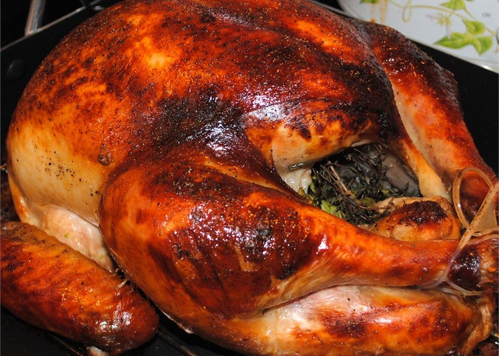

Grandma's Farmhouse Turkey Brine

Source
Ingredients
- 2 cups kosher salt
- 3 tablespoons poultry seasoning
- 3 tablespoons onion powder
- 1 tablespoon black pepper
- 4 quarts vegetable broth
- 2 quarts water
- 3 cups cranberry juice
Directions
- Stir the salt, poultry seasoning, onion powder, and black pepper together in a large stockpot. Pour in the vegetable stock, water, and cranberry juice; bring to a boil. Reduce heat to medium-low and simmer 20 minutes. Remove from the heat and allow to cool to room temperature.
- To use, submerge a turkey into the cooled brine and refrigerate 12 to 16 hours to brine. Drain the turkey and pat dry before roasting according to your recipe's directions.